Результаты каждого тестируемого
У каждого прошедшего тестирование будут отображаться численные показатели и уровни шкалы всех тестов использованных при тестировании.
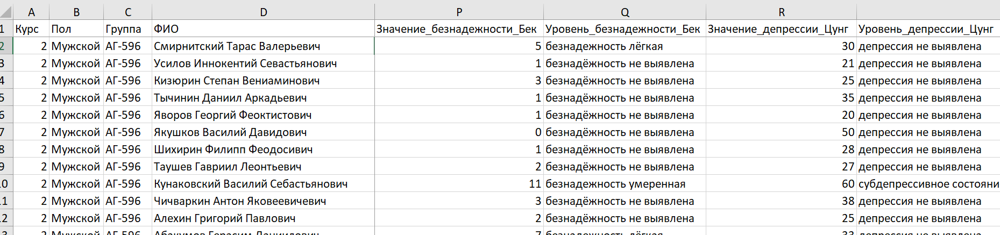
Список тестируемых чьи результаты (в тестах тревожности, депрессии, адаптации, остракизма, выгорания, психоэмоционального состояния, ПТСР) требуют особого внимания
В список попадают все у кого при прохождении следующих тестов:
Профессиональное выгорание педагогов Водопьянова, Эмоциональное выгорание Бойко Ильин, Выгорание Каппони Новак, Профессиональное выгорание Маслач Водопьянова, Эмоциональное выгорание Бойко, BAT краткая версия Демкин, Опросник психологического выгорания Рукавишников, Экспресс-диагностика адаптации первокурсников Гончарова, Самооценка психических состояний Айзенк, Социально-психологическая адаптированность Роджерс Даймонд Снегирева, САН Доскин Мирошников, Индекс общего самочувствия ВОЗ 1999, Шкала тревожности Кондаша Школьники, Шкала тревожности Кондаша Студенты, Шкала депрессии Бека, Шкала безнадежности Бека, Шкала депрессии Цунга, ШНПО ПМ Бойкина, Шкала субъективного остракизма Бойкина, Склонность к девиантному поведению Леус,Шкала депрессии, тревоги и стресса, DASS-21 Адаптация А. А. Золотарева,Шкала психологического стресса PSM-25 Адаптация Н. Е. Водопьянова, Симптоматический опросник SCL-K-9 Адаптация А. А. Золотарева, Опросник выраженности психопатологической симптоматики SCL-90-R Адаптация Н. В. Тарабрина, Опросник враждебности Басса-Дарки, BDHI Адаптация А.А. Хван, Опросник диагностики агрессии Басса-Перри, BPAQ-24 Адаптация С. Н. Ениколопов, Методика оценки нервно-психической устойчивости «Прогноз-2» В.Ю. Рыбников, Миссисипская шкала посттравматического стрессового расстройства (Mississippi Scale for PTSD, CMS) военный вариант, Миссисипская шкала посттравматического стрессового расстройства (Mississippi Scale for PTSD, CMS) гражданский вариант, Опросник на скрининг ПТСР (Trauma Screening Questionnaire, Brewin C. et al., 2002), Шкала оценки влияния травматического события (ШОВТС) Адаптация Н. В. Тарабрина, Шкала оценки интенсивности боевого опыта Адаптация Н. В. Тарабрина
выявлено минимум одно из следующих состояний -
- высокий уровень выгорания
- имеется выгорание
- критический уровень выгорания
- крайне высокий уровень
- 250-299
- 300 и более
- очень высокий уровень
- низкий уровень адаптации
- выраженная социально-психологическая дезадаптация
- очень высокий уровень тревожности
- тяжелая депрессия
- безнадежность тяжёлая
- истинное депрессивное состояние
- посттравматическое стрессовое расстройство
- 151-175
- 176-195
- 81-110
- 27-36
- 8-10
- высокий уровень DASS
- высокий уровень ППН
- ярко выраженный признак
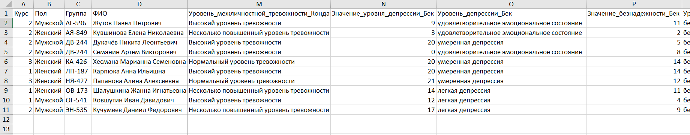
Список тестируемых чьи результаты (в тестах тревожности, депрессии, адаптации, остракизма, выгорания, психоэмоционального состояния, ПТСР) находятся в зоне риска
В список попадают все у кого при прохождении следующих тестов:
Профессиональное выгорание педагогов Водопьянова, Эмоциональное выгорание Бойко Ильин, Выгорание Каппони Новак, Профессиональное выгорание Маслач Водопьянова, Эмоциональное выгорание Бойко, BAT краткая версия Демкин, Опросник психологического выгорания Рукавишников, Экспресс-диагностика адаптации первокурсников Гончарова, Самооценка психических состояний Айзенк, Социально-психологическая адаптированность Роджерс Даймонд Снегирева, САН Доскин Мирошников, Индекс общего самочувствия ВОЗ 1999, Шкала тревожности Кондаша Школьники, Шкала тревожности Кондаша Студенты, Шкала депрессии Бека, Шкала безнадежности Бека, Шкала депрессии Цунга, ШНПО ПМ Бойкина, Шкала субъективного остракизма Бойкина, Склонность к девиантному поведению Леус, DASS-21 Адаптация А. А. Золотарева,Шкала психологического стресса PSM-25 Адаптация Н. Е. Водопьянова, Симптоматический опросник SCL-K-9 Адаптация А. А. Золотарева, Опросник выраженности психопатологической симптоматики SCL-90-R Адаптация Н. В. Тарабрина, Опросник враждебности Басса-Дарки, BDHI Адаптация А.А. Хван, Опросник диагностики агрессии Басса-Перри, BPAQ-24 Адаптация С. Н. Ениколопов, Методика оценки нервно-психической устойчивости «Прогноз-2» В.Ю. Рыбников, Миссисипская шкала посттравматического стрессового расстройства (Mississippi Scale for PTSD, CMS) военный вариант, Миссисипская шкала посттравматического стрессового расстройства (Mississippi Scale for PTSD, CMS) гражданский вариант, Опросник на скрининг ПТСР (Trauma Screening Questionnaire, Brewin C. et al., 2002), Шкала оценки влияния травматического события (ШОВТС) Адаптация Н. В. Тарабрина, Шкала оценки интенсивности боевого опыта Адаптация Н. В. Тарабрина
выявлено минимум два из следующих состояний -
- пограничное выгорание
- симптомы выгорания
- начинающееся выгорание
- средний уровень выгорания
- высокий уровень
- доминирующий симптом
- не благоприятное состояние
- преобладает плохое настроение
- низкий уровень самооценки
- высокий уровень социального остракизма
- легкая степень социально-психологической дезадаптации
- 0-19
- высокий уровень тревожности
- умеренная депрессия
- безнадежность умеренная
- субдепрессивное состояние или маскированная депрессия
- нарушение адаптации
- 126-150
- 61-80
- 20-26
- 6-7
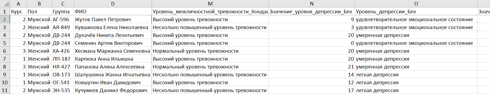
Подсчет количества прошедших тестирование по выбранным категориям.
Сколько человек из категории прошло тестирование
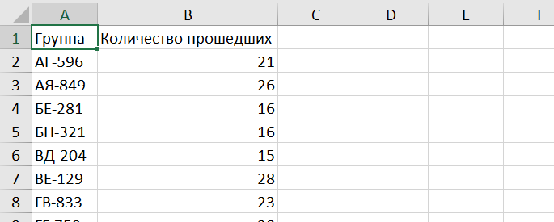
Результаты каждого теста по отдельности
Подробные результаты теста с указанием диапазонов нормальности и субшкал отсортированные по убыванию главного показателя.
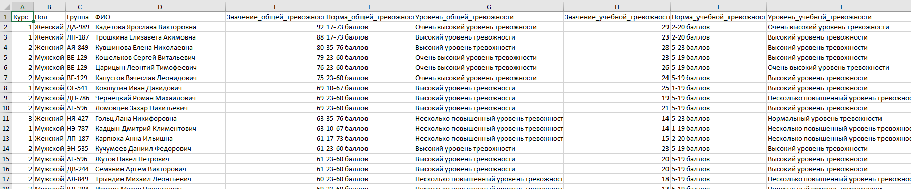
Ответы каждого теста по отдельности для проверки
Ответы тестируемых преобразованные в числа для проверки правильности работы программы.
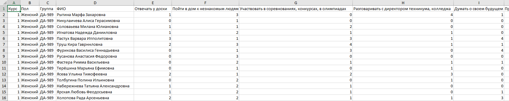
Сводная таблица по состояниям
Сколько тестируемых имеет то или иное состояние и процентное соотношение к общему количеству тестируемых.
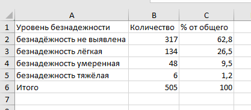
Сводная таблица по уровням склонности для профориентационных тестов
Сколько тестируемых имеет тот или иной уровень склонности и процентное соотношение к общему количеству тестируемых.
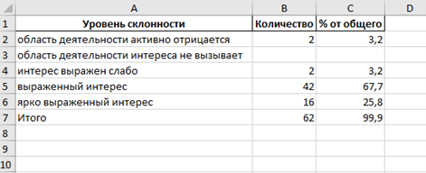
Листы со списками по уровню склонности
На этих листах отображаются тестируемые у которых был обнаружен соответствующий уровень склонности.
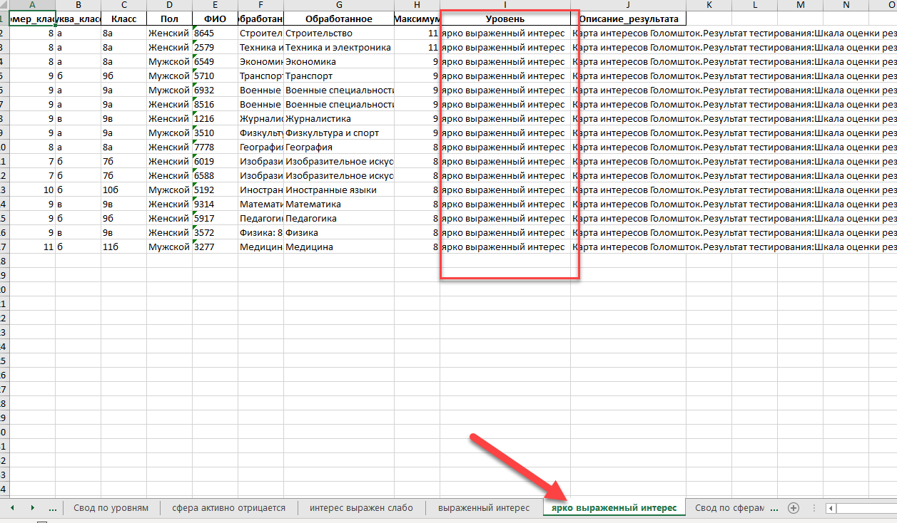
Сводная таблица по сферам деятельности к которым склонны тестируемые для профориентационных тестов
Сколько тестируемых имеет склонность к той или иной сфере деятельности и процентное соотношение к общему количеству тестируемых.
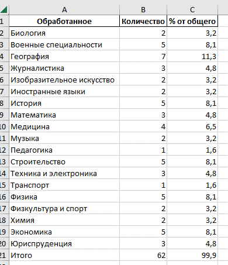
Листы со списками по склонности к той или иной сфере
На этих листах отображаются тестируемые у которых была обнаружена склонность к определенной сфере деятельности.
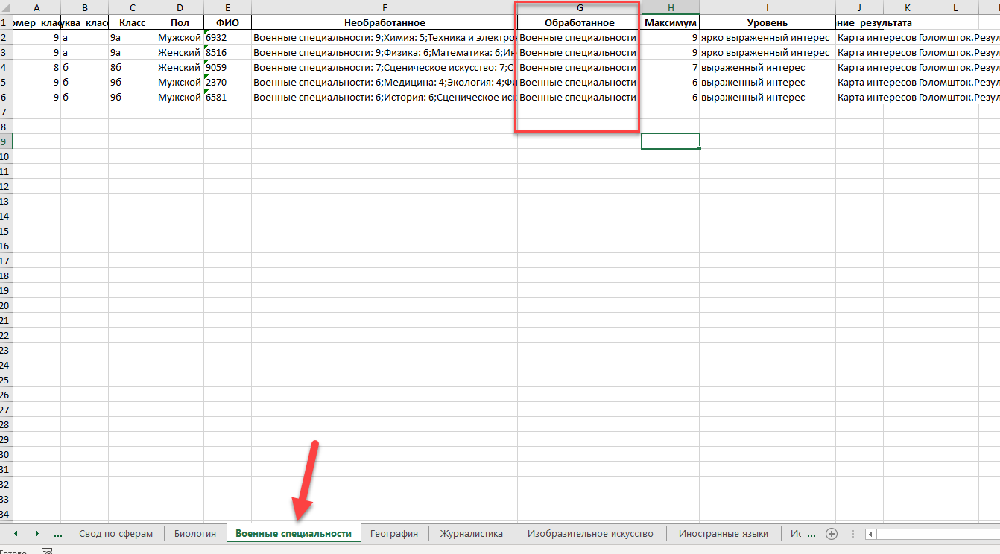
Подсчет среднего значения показателя и уровня шкалы теста в разрезе выбранных категорий(до 3).
Для каждой выбранной категории высчитывается среднее арифметическое значение.
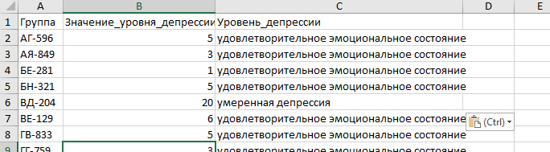
Подсчет среднего значения показателя и уровня шкалы теста в разрезе выбранных категорий(до 3).
Для каждой выбранной категории высчитывается среднее арифметическое значение шкал теста.
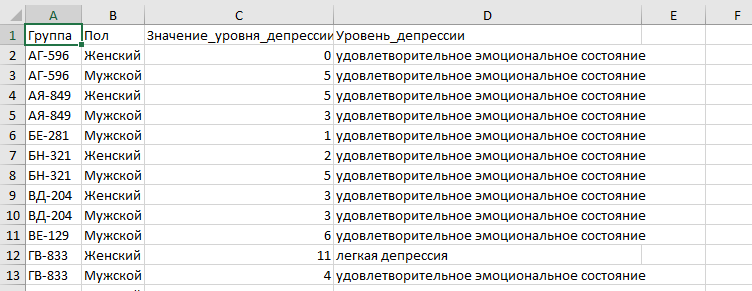
Подсчет количества тестируемых по уровням шкалы теста в разрезе выбранных категорий(до 3).
Для каждой выбранной категории подсчитывается сколько раз тот или иной уровень шкалы встречался в указанной категории и процентное соотношение к общему
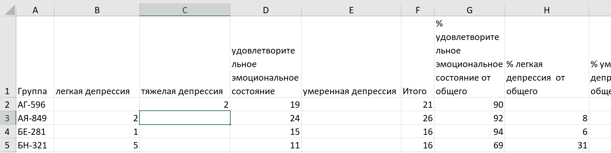
Подсчет количества тестируемых по уровням шкалы теста в разрезе выбранных категорий(до 3).
Для каждой выбранной категории подсчитывается сколько раз тот или иной уровень шкалы встречался в указанной категории и процентное соотношение к общему
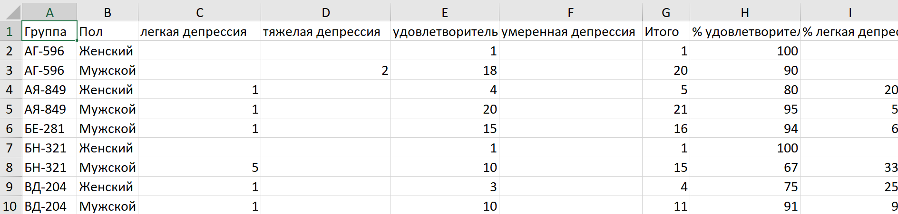
Создание социоматриц
Создается результирующая социоматрица по всем вопросам использованным в социометрическом исследовании.
Создается социоматрица на каждый вопрос по отдельности.
Обработка производится для вопросов как с положительным, так и негативным выбором.
Подсчитывается количество полученных, сделанных и взаимных выборов.
Подсчитываются групповые индексы: Индекс групповой сплоченности,Индекс групповой конфликтности (при наличии вопросов на негативный выбор),Индекс референтности группы .
Подсчитываются индивидуальные индексы: Индекс социометрического статуса, Индекс эмоциональной экспансивности, Коэффициент удовлетворенности.
Создается проверочный файл в котором указаны все выборы участников исследования для каждого вопроса с подсчетом количества выборов.
Создается файл в котором будут указаны дубликаты ФИО(при наличии) это полезно при проведении социометрии с помощью Яндекс Форм или аналогов.
В случае если выбирались люди отсутствовавшие при проведении социометрии, для каждого вопроса будут создаваться файлы в которых указывается кто и сколько раз выбрал отсутствовавших.
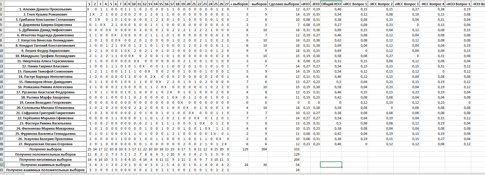
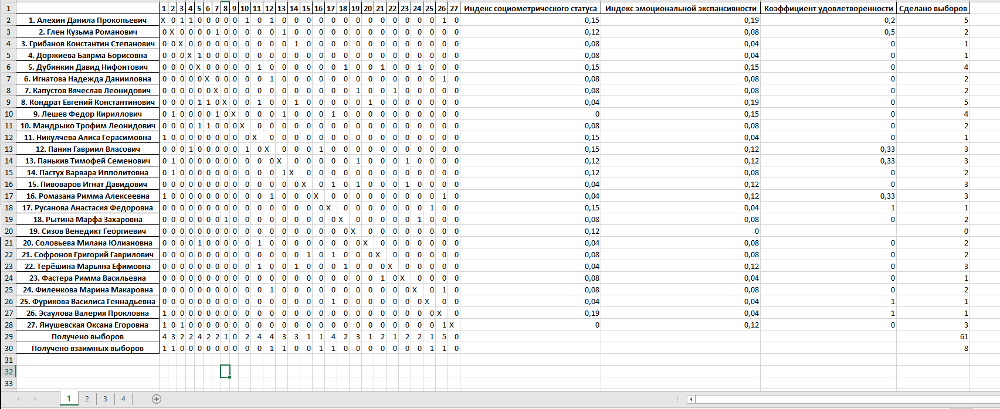
Создание социоматриц.
По каждому вопросу социометрического исследования создается 7 вариантов социограммы
Круги обозначающие людей делятся по цветам и размерам в соответствии с количеством полученных выборов
Используется 5 категорий: 1) Лидеры (получившие максимум выборов), 2) Предпочитаемые (количество выборов выше среднего), 3) Пренебрегаемые (количество выборов ниже среднего), 4) Оттесненные (1-2 выбора), 5) Изолированные (0 выборов)
Взаимные выборы обозначаются стрелками зеленого цвета, односторонние выборы обозначаются стрелками синего цвета
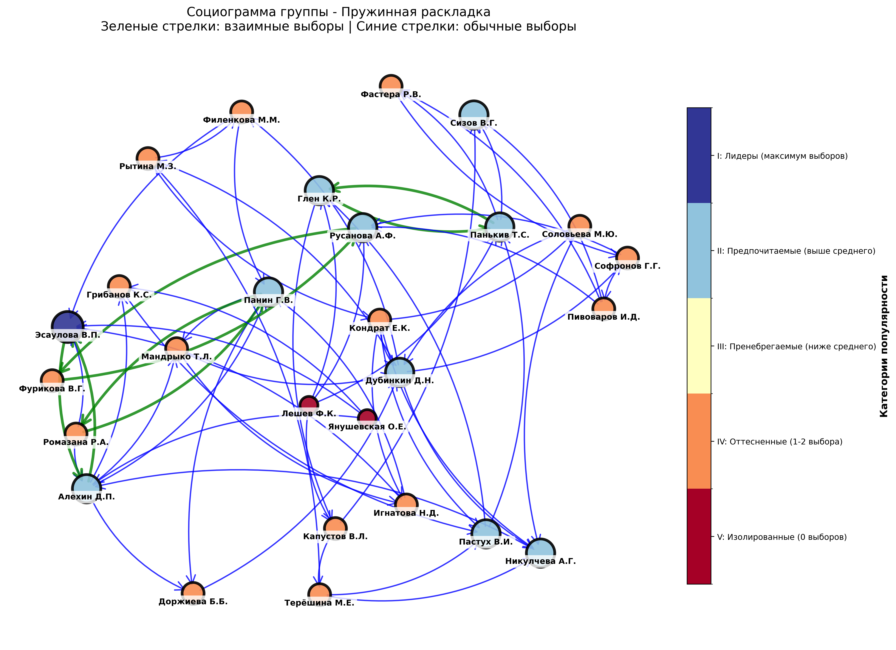
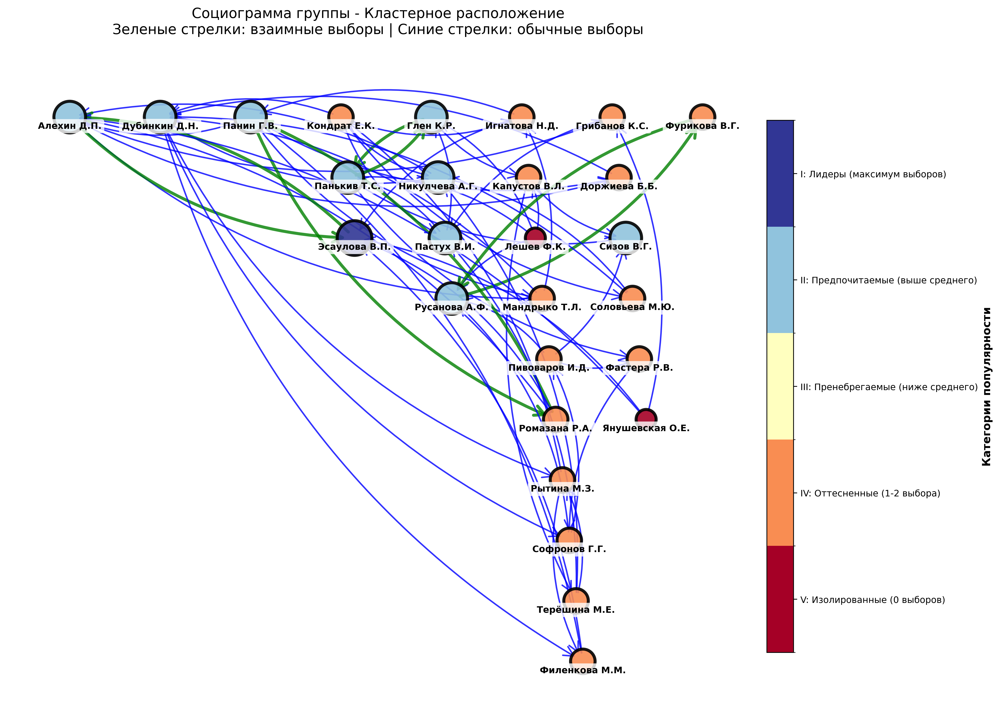
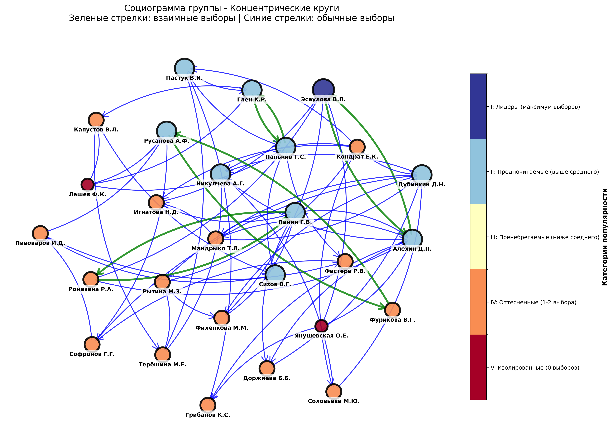
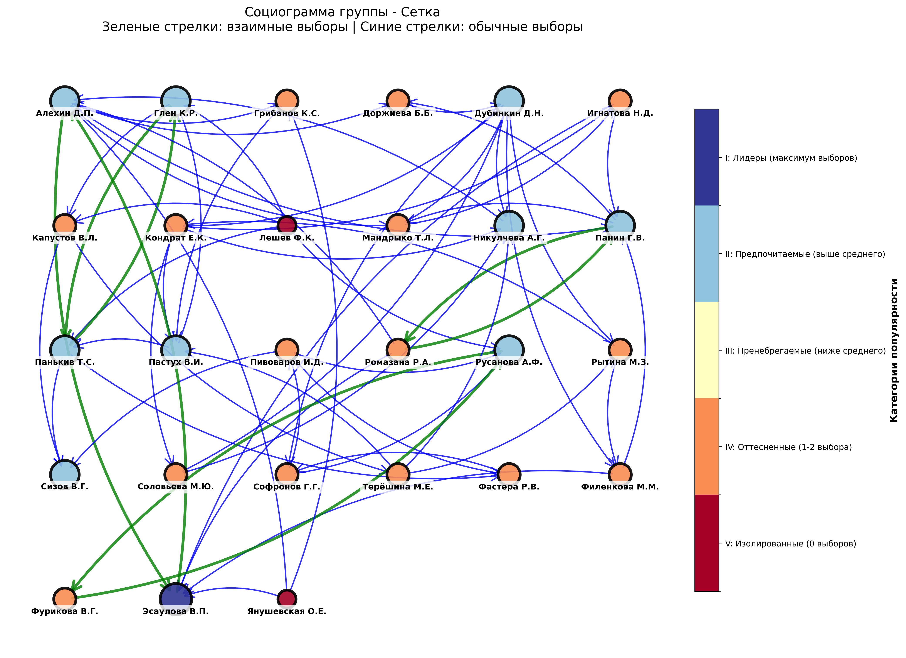
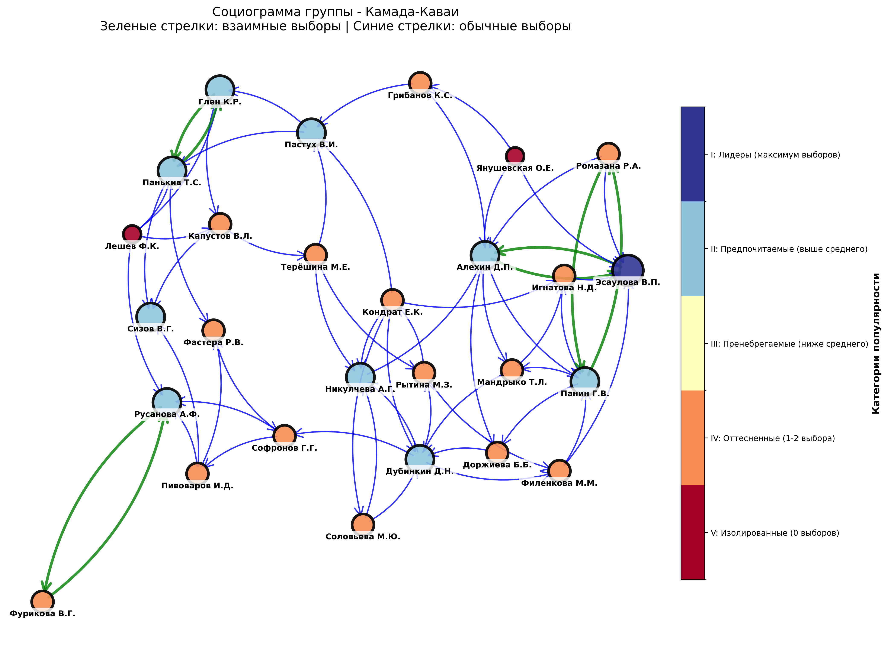
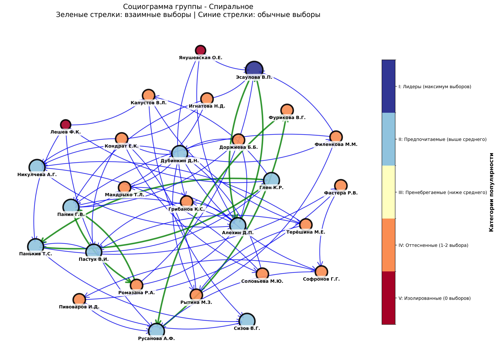
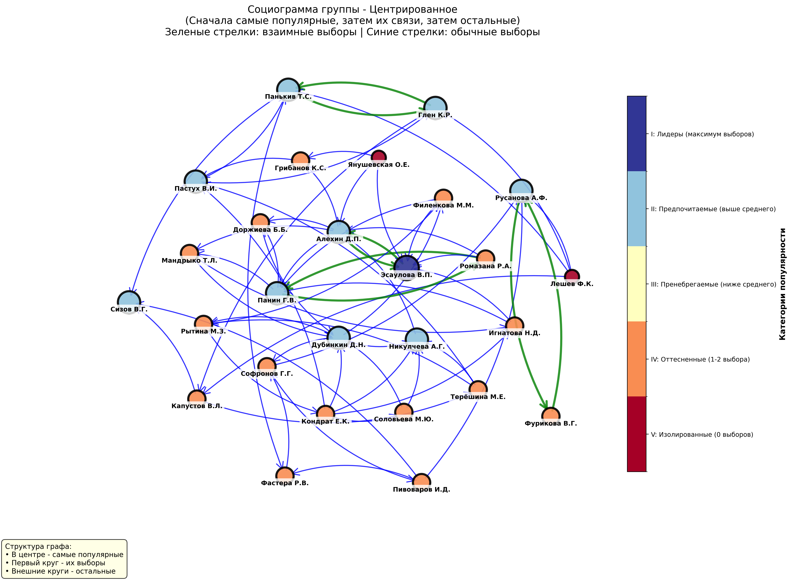
Базовый групповой и индивидуальный анализ социометрии.
Подсчитываются количество участников, общее количество выборов, общее количество взаимных выборов с вычислением процентов, среднее количество выборов, плотность графа (доля выборов от максимально возможных в группе).
Создается список диад (взаимных выборов).
Создается список взаимосвязанных групп (триад, тетрад и т.п.) при наличии таковых.
Создается список звездообразных структур (людей имеющих 3 и более связей) с указанием кто выбрал и кого выбрали.
Создается список изолированных узлов (участников без взаимных выборов) с указанием кто выбрал и кого выбрали.
Создается список ТОП 5 самых популярных (участники получившие наибольшее количество выборов) с указанием баланса (разница между количество полученных и сделанных выборов).
Создается список ТОП 5 самых активных (участники сделавшие наибольшее количество выборов) с указанием баланса (разница между количество полученных и сделанных выборов).
Создается список самых непопулярных (участники получившие наименьшее количество выборов) с указанием количества сделанных выборов.
Создается список самых пассивных (участники сделавших наименьшее количество выборов) с указанием количества полученных выборов.
Создается список участников отсортированный по убыванию количества полученных выборов с указанием баланса (разница между количество полученных и сделанных выборов).
Создается список участников отсортированный по убыванию количества сделанных выборов с указанием баланса (разница между количество полученных и сделанных выборов).
Создается сводная таблица в которой указано распределение по балансу.
Подсчитывается количество взаимных пар, количество участников во взаимных парах, количество участников без взаимных пар.
Создается список участников отсортированных по убыванию количества взаимных пар.
Подсчитывается среднее количество выборов на человека, разброс (стандартное отклонение), максимальное и минимальное количество выборов.
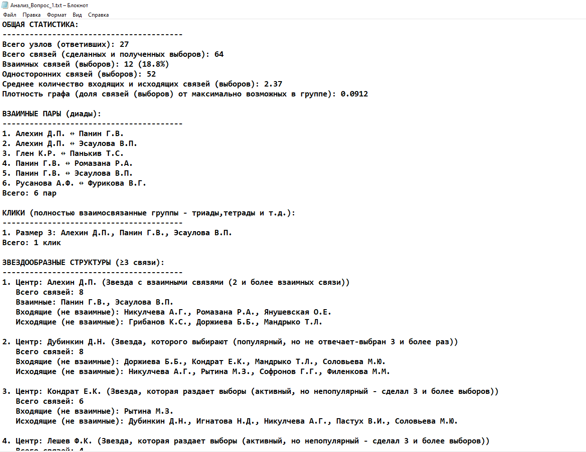
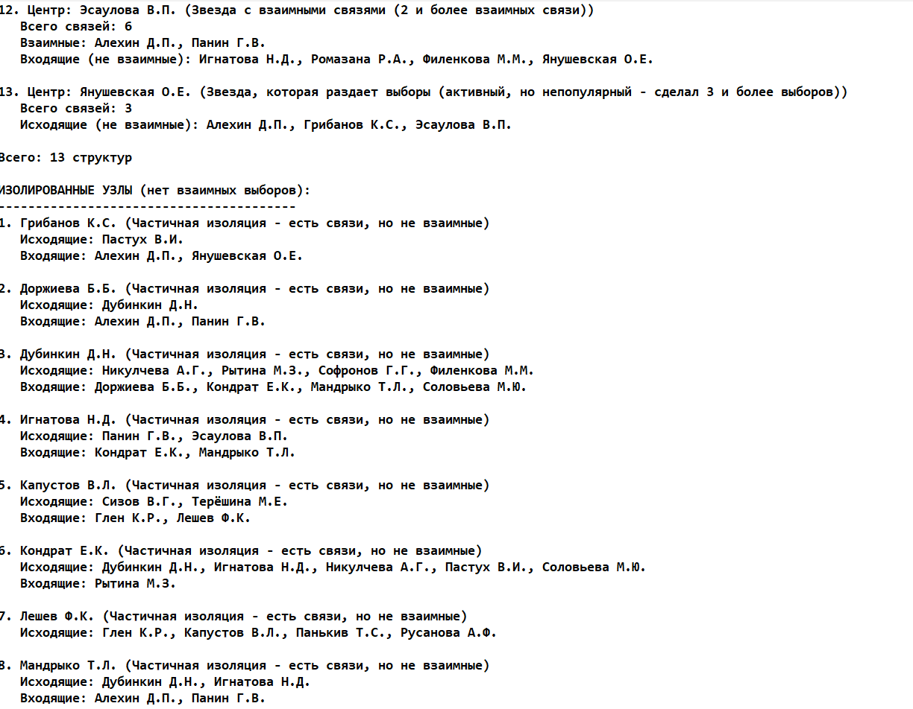
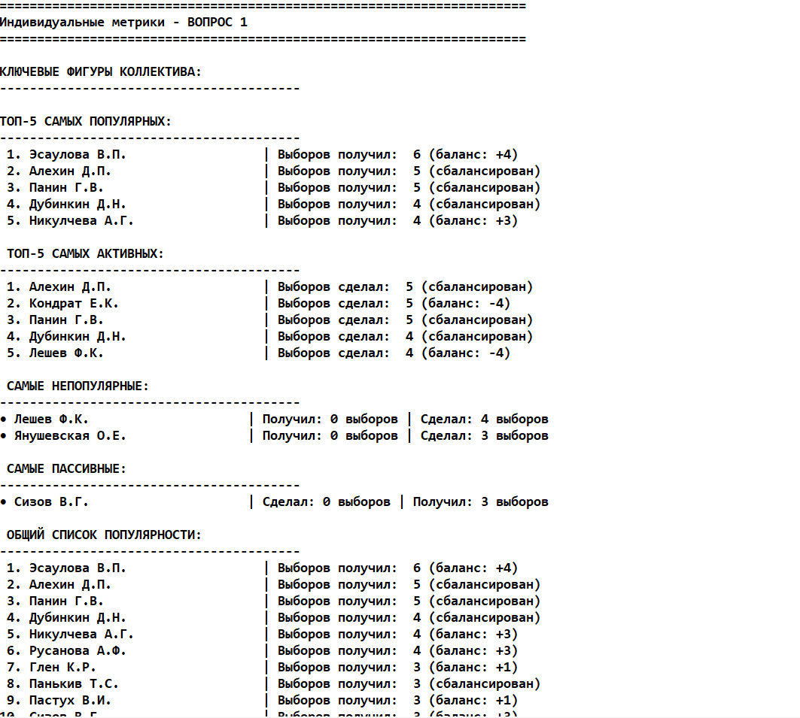
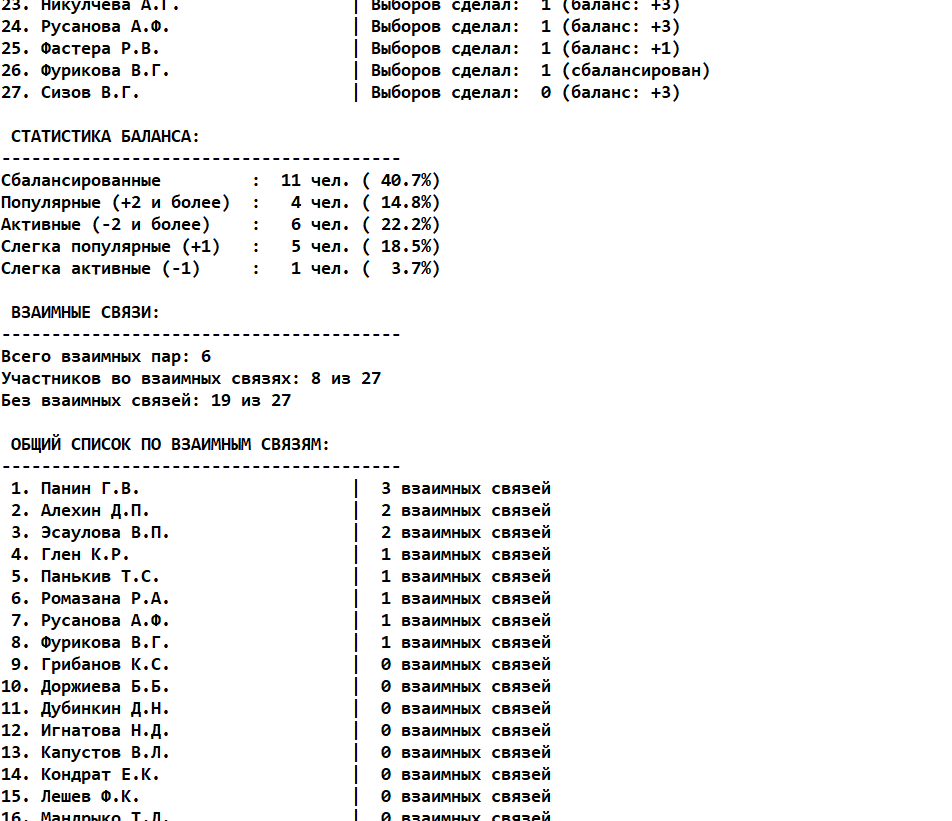
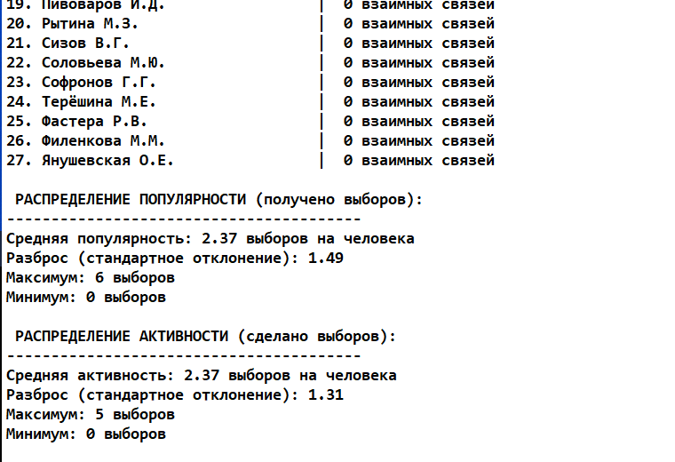